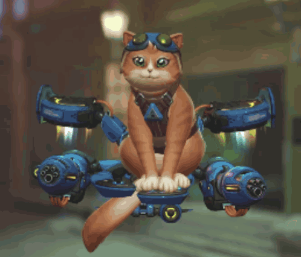

What is this site?
This is a website built for 67-272 Infomation Systems Milieux Spring 2026. The site is themed around Jetpack Cat from Overwatch 2 by Blizzard Entertainment. Just a silly character I've been a fan of since her release in the game.
A fun and slightly stressful endeavor this was.
There's a readme file in the repo that points to grading requirements.
